Les 13 Situations d'Apprentissage et d'Évaluation réalisées durant ma première année de BUT Science des Données, réparties sur les deux semestres. Chaque projet confronte théorie et réalité du terrain — du reporting à l'enquête statistique, en passant par les bases de données et la datavisualisation.
Du reporting à la modélisation statistique, en passant par SQL, l'enquête de terrain et la datavisualisation Power BI. Cliquez sur les aperçus pour les agrandir.
Conception d'un rapport de données structuré, lisible et orienté prise de décision. Sélection des indicateurs pertinents, mise en forme professionnelle et présentation des résultats à un public non technique.
Ce que j'ai réalisé
— Identification des KPIs adaptés à l'objectif métier
— Mise en forme d'un rapport structuré avec Excel et Power BI
— Choix des graphiques selon le type de données (évolution, comparaison, répartition)
— Présentation orale des résultats à un public non technique
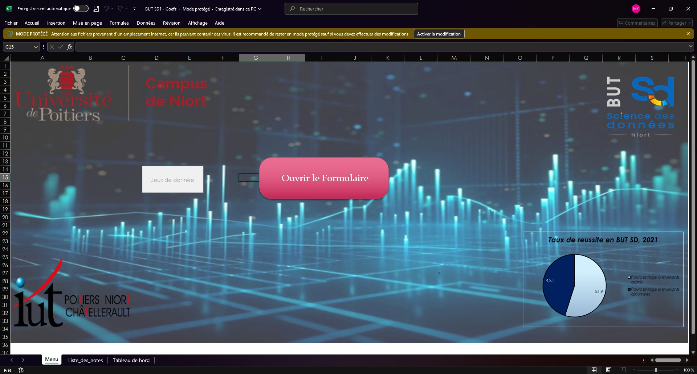
Manipulation de fichiers aux formats variés — CSV, JSON, Excel, TXT. Import, export, nettoyage et transformation de données brutes afin de les rendre exploitables dans une chaîne d'analyse complète.
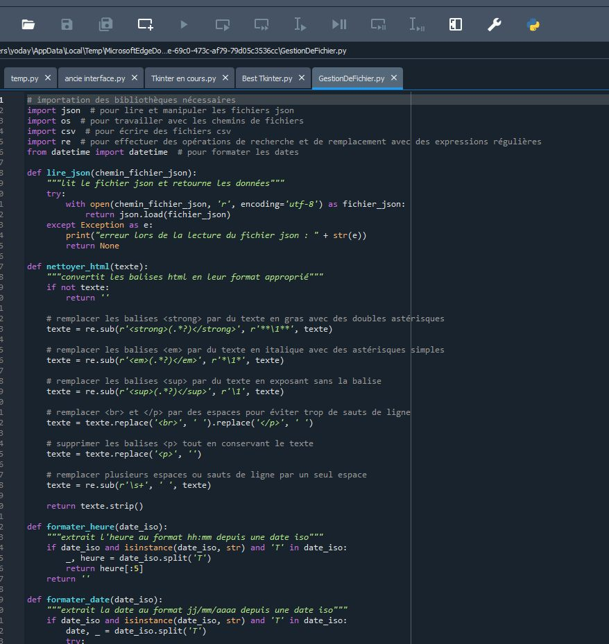
Nettoyage et mise en forme d'un tableau de données brut afin de le rendre exploitable, puis calcul d'indicateurs de synthèse (effectifs, moyennes, médianes, écarts-types) pour dégager les premières tendances et préparer une analyse exploratoire.
Ce que j'ai réalisé
— Nettoyage et structuration d'un tableau de données brut
— Calcul d'indicateurs de synthèse (tendance centrale, dispersion)
— Construction de tableaux croisés pour croiser les variables
— Mise en évidence des premières tendances exploratoires
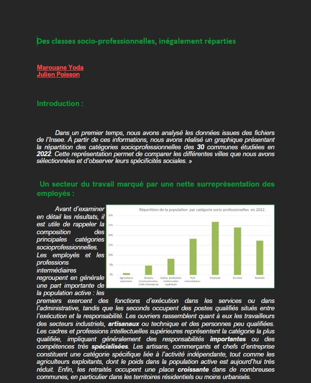
Apprentissage en situation réelle des flux de production de données dans un contexte professionnel : collecte terrain, saisie, contrôle qualité, structuration et stockage des informations métiers.
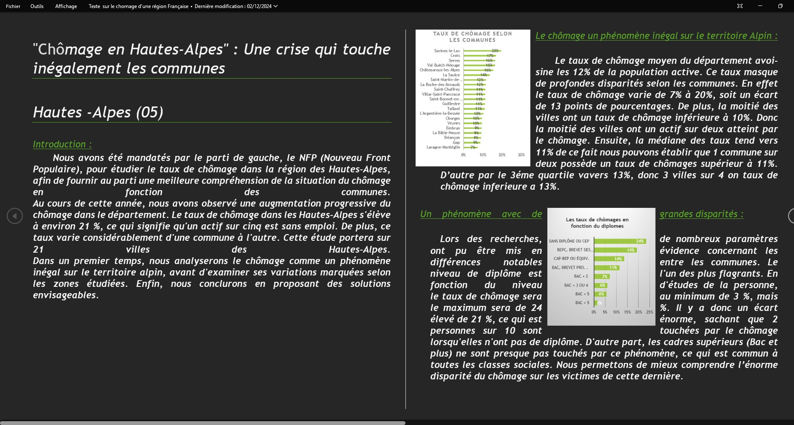
Présentation orale en anglais d'un territoire économique et culturel. Travail sur la recherche documentaire, la structuration d'un discours clair et la communication professionnelle en langue étrangère.
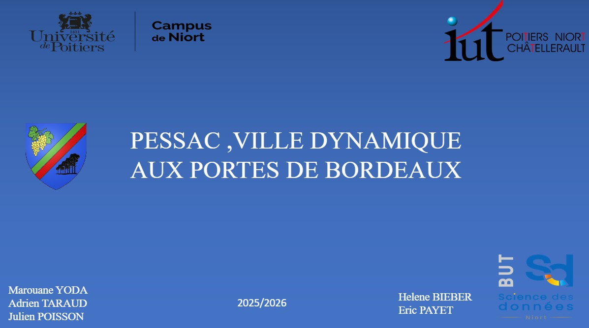
Conception du questionnaire, définition de la population cible et du plan de sondage, collecte sur le terrain, puis traitement statistique des réponses. Présentation des résultats sous forme d'un rapport synthétique illustré.
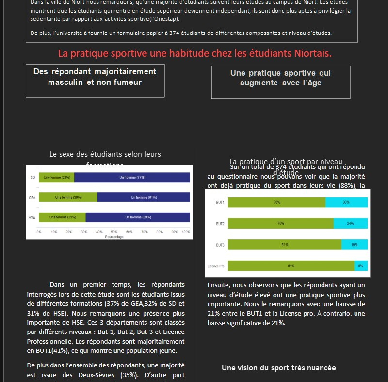
Modélisation d'une base relationnelle complète : rédaction du MCD et du MLD, création des tables en SQL, définition des contraintes d'intégrité (clés primaires, étrangères) et requêtage avancé sur données réelles.
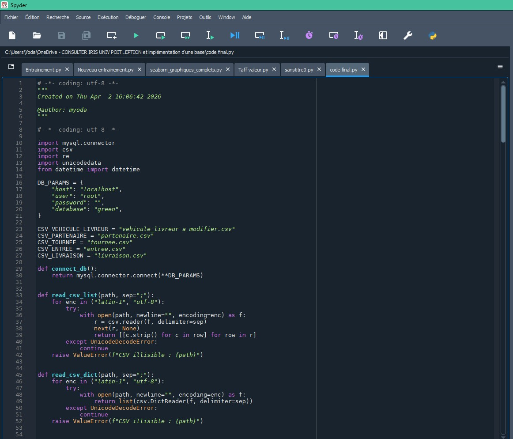
Application des méthodes d'échantillonnage probabiliste — aléatoire simple, stratifié, par grappes — pour produire des estimations fiables sur une population à partir d'un sous-ensemble de données collectées.
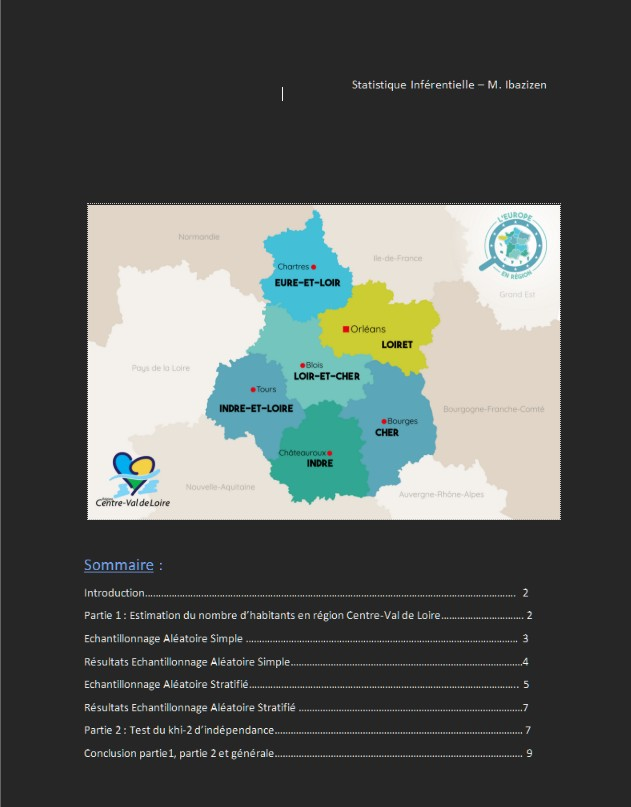
Mise en œuvre de modèles de régression linéaire simple et multiple sur un jeu de données réel. Vérification des hypothèses, interprétation des coefficients, évaluation de la qualité prédictive et visualisation des résidus.
Démarche suivie
— Exploration et nettoyage du dataset (valeurs manquantes, outliers)
— Régression linéaire simple puis multiple avec sélection des variables
— Vérification des hypothèses (normalité des résidus, homoscédasticité, multicolinéarité)
— Interprétation des coefficients et du R²
— Visualisation des résidus et des prédictions avec Python (Matplotlib / Seaborn)
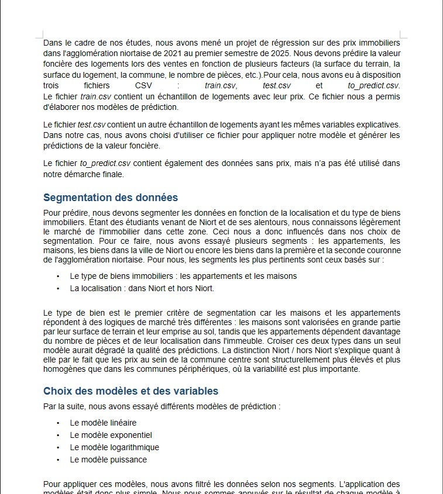
Participation à un concours de datavisualisation organisé dans le cadre de la formation : création d'une visualisation percutante à partir d'un jeu de données, avec un objectif de clarté, d'impact visuel et de storytelling de données.
Ce que j'ai réalisé
— Exploration du jeu de données et identification du message clé à transmettre
— Choix d'une représentation graphique originale et pertinente
— Travail sur la mise en page, les couleurs et la hiérarchie visuelle
— Présentation du visuel devant un jury
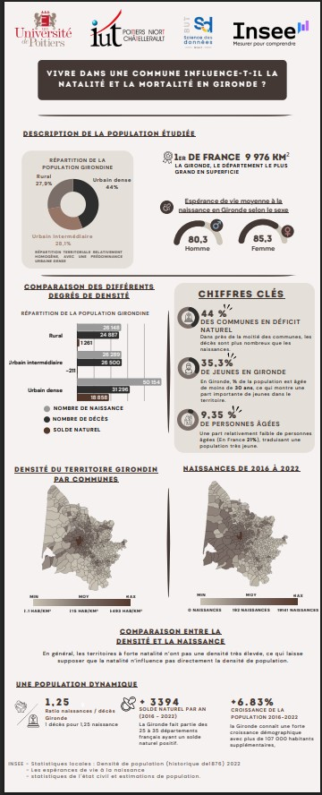
Sélection, calcul et mise en forme d'indicateurs clés pour piloter une activité. Création d'un tableau de bord Power BI interactif avec mesures DAX, graphiques dynamiques, filtres croisés et présentation orientée décision.
Ce que j'ai réalisé
— Définition et calcul des KPIs pertinents via des mesures DAX
— Construction d'un tableau de bord Power BI interactif (filtres croisés, slicers)
— Choix des visualisations adaptées : courbes de tendance, histogrammes, jauges
— Présentation orale des indicateurs et des choix de mise en page
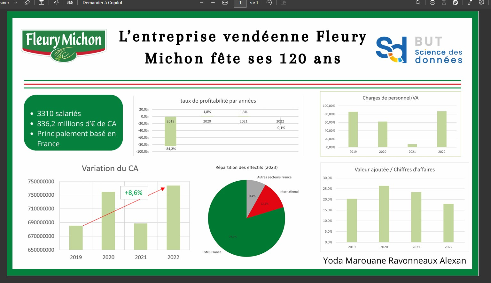
Projet intégrateur combinant l'exploration d'un dataset réel, l'analyse statistique descriptive, l'élaboration d'un rapport structuré et la création de visualisations Power BI percutantes, orientées vers la prise de décision.
Ce que j'ai réalisé
— Exploration et nettoyage des données brutes
— Analyse statistique descriptive et identification des tendances
— Élaboration d'un rapport structuré avec sélection des indicateurs clés
— Création de visualisations Power BI adaptées aux enjeux métiers
— Présentation des résultats et des choix de représentation graphique
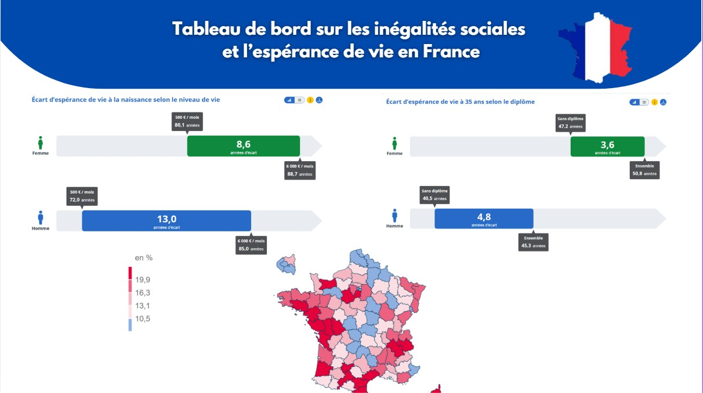
Compétences, projets personnels, outils et informations de contact.